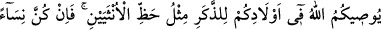
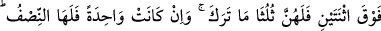
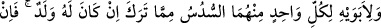
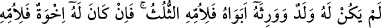
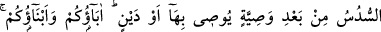
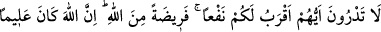
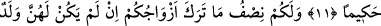
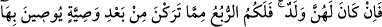
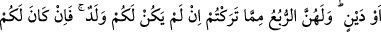
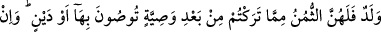
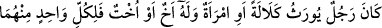

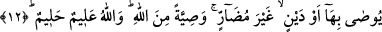
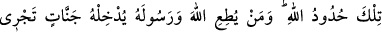
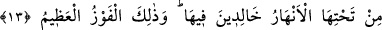
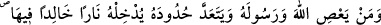
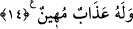
MİRAS HUKUKU
11- Allah size, çocuklarınız hakkında, erkeğe, kadının payının iki misli (mîras
vermenizi) emreder. (Çocuklar) ikiden fazla kadın iseler, ölünün bıraktığının üçte
ikisi onlarındır. Eğer yalnız bir kadınsa yarısı onundur. Ölenin çocuğu varsa, ana-
babasından her birinin mîrastan altıda bir hissesi vardır. Eğer çocuğu yok da ana-
babası ona vâris olmuş ise, anasına üçte bir (düşer). Eğer ölenin kardeşleri varsa,
anasına altıda bir (düşer. Bütün bu paylar ölenin) yapacağı vasiyetten ve borçtan
sonradır. Babalarınız ve oğullarınızdan hangisinin size, fayda bakımından daha
yakın olduğunu bilemezsiniz. Bunlar Allah tarafından konmuş farzlardır (paylardır).
Şüphesiz Allah ilim ve hikmet sâhibidir.
12- Yapacakları vasiyetten ve borçtan sonra eşlerinizin, eğer çocukları yoksa,
bıraktıklarının yarısı sizindir. Çocukları varsa bıraktıklarının dörtte biri sizindir.